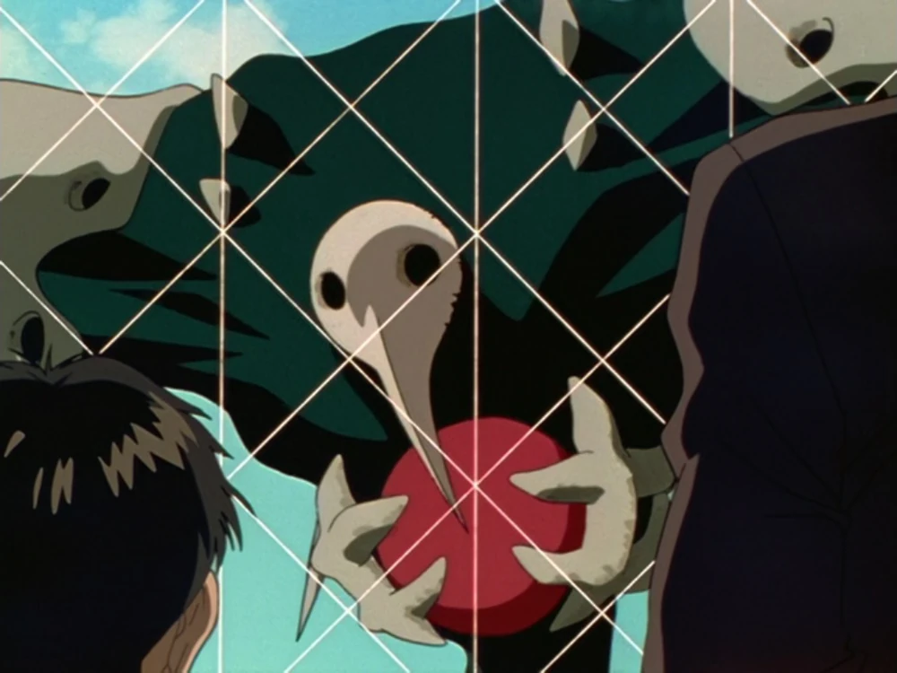

Sachiel
Il s'agit du premier Ange à apparaître au Japon en 2015. Il parvient à atteindre Tokyo-3, mais est intercepté par l'Evangelion Unité-01.
Il s'agit du premier Ange à apparaître au Japon en 2015. Il parvient à atteindre Tokyo-3, mais est intercepté par l'Evangelion Unité-01.